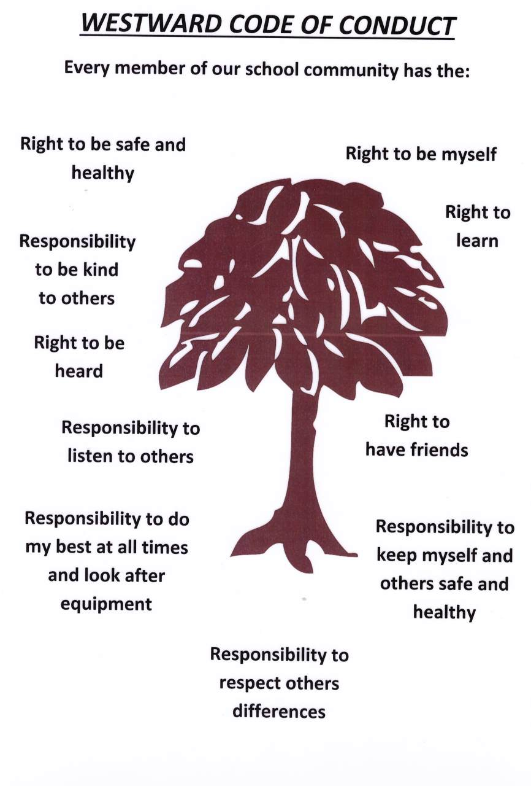

Behaviour Policy
This policy applies to the Early Years, Main School and Out of School Care facilities
The non-statutory advice contained in Behaviour and Discipline in Schools (Jan 2016) has been used in the writing of this policy.
Aims and Objectives of this policy
Our aims and objectives are two fold:
- To develop each child as an individual
- To develop his/her academic and social potential to the full
The school's behaviour policy applies to all pupils when they are on school premises or in the care of the school, or wearing school uniform, or otherwise representing the school.
The Headteacher is entitled to exercise a wide discretion in relation to the School's policies, rules and regime and will exercise those discretions in a reasonable and lawful manner, and with procedural fairness when the status of a pupil is at issue.
The aim of this policy is to outline to all members of our school community a range of strategies to enable pupils to behave well, and the strategies to use when pupils misbehave.
At Westward we aim;
- To be a respectful school. To respect everyone and everything around us.
- To have a calm atmosphere in the school.
- We expect children to be thoughtful, responsible and show consideration for others.
- We aim for our pupils to develop self discipline, the ability to learn independently and work cooperatively and have proper regard for authority.
- Foster a caring attitude for the school environment, including the buildings, inside and outside areas, equipment and personal effects.
- Children can be expected to be listened to, to be treated fairly and to be encouraged to learn about the consequences of their behaviour for themselves and others.
- There will be clear documentation of the code of behaviour for pupils and staff. These will be discussed widely prior to agreement and subject to regular review in the light of experience.
- The pupil's Code of Conduct and school rules will be discussed with the pupils. The code and expectations will be known to both pupils and parents, as will the consequences/sanctions of poor behaviour and how good behaviour is rewarded.
- The school will continue to recognise its responsibilities to provide excellent pastoral and supervisory care for pupils.
- Staff, including new staff, will be aware of the preferred behaviour management strategies of the school. They will ensure that there is a consistent and clear approach to discipline.
- Pupils will be encouraged to understand the principles and reasons underlying the expectations and routines of the school.
- Pupils will know that their good behaviour is recognised and valued.
Our principles are:
We believe it is important that children learn through example and teaching the importance of:
- The difference between right and wrong
- Telling the truth
- Respecting the rights and property of others
- Acting considerately towards others
- Taking personal responsibility for one's action
- Self discipline
- The school rules and the need to comply with them
Through the schools' behaviour policy we aim to;
- Promote British Values
- Improve pupil self esteem
- Enhance pupils' moral development
- Improve behaviour and relationships
- Nurture positive attitudes towards diversity in society and reduce prejudice
- Develop pupils as global citizens
- Provide pupils with strategies to stay safe in the Westward community and beyond
Staff, pupils and parents must be seen to work together to ensure good standards of discipline. We must be consistent in our approach and in what is expected of children and parents (refer to Parent Behaviour Policy).
The Westward Code of Conduct as shown below is displayed in every classroom and around the school.

- Pupils should treat others as they wish to be treated
- Pupils should be kind and friendly
- Pupils should not bully (this includes cyber bullying), intimidate or undermine other children. (Refer to Anti Bullying Policy)
- Pupils should be well mannered to everyone (each other and adults).
- Pupils should not use offensive language.
- Pupils are expected to respond to reasonable requests of adults without dispute.
- Pupils are expected to show respect for the work and the property of others.
- Fighting and play fighting is not allowed.
- Pupils should walk in corridors and move around the school safely and quietly.
- Pupils are expected to take care and show respect for the school environment.
- Pupils are expected to have the correct equipment and settle quickly to their work.
- They are expected to be responsible for classroom resources and tidiness and should be encouraged to develop independence.
- Pupils should work at an appropriate noise level.
- Pupils are expected to act safely and responsibly when working on electronic devices at school and at home and to think carefully about how they act and what they say to each other. They should keep safe at all times.
- Pupils should do their best all the time and show pride in their work.
- Pupils should line up quietly and sensibly.
Children will learn to follow these codes through the consistent example shown by adults. Assemblies, PSHE and curriculum lessons time such as stories, outside speakers, project work and drama will be used to actively promote and model positive behaviours and to support the children in resolving any conflicts.
The Behaviour Officer in the Early Years/Lower School is Mrs Callaby
The Behaviour Officer in the Upper School is Mrs J. Williams
In their absence a member of the senior management team will take on the role.
Behaviour Management
General principles
- All adults at Westward accept that they take responsibility and work together as a cohesive model of behaviour.
- The focus of behaviour management is positive, not confrontational.
- Children are treated with respect and allowed both choice and control of their own behaviour.
- A clear distinction is made between the child and his or her behaviour. There can be bad behaviour but there are no bad children.
- Adults take responsibility for ensuring that children grow in awareness of the consequences of their behaviour.
- Staff are consistent about their expectations of pupil's behaviour and share those expectations with parents.
- Staff support each other.
- Staff actively draw attention to desirable behaviour. Pupils know that their cooperation is both expected and appreciated.
Rewards
Positive behaviour and reinforcement is emphasised at all times
Praise is used to;
- Reinforce the following rules as children learn more quickly when given positive feedback
- Draw other children's attention to appropriate behaviour
- Give emphasis to the wanted behaviour, rather than the unwanted
- Encourage self esteem and an ethos of friendly acceptance
- To encourage children to make choices so that they can see that good behaviour is rewarded.
Children from the Early Years upwards may be chosen by their class teacher to be awarded a special Headteacher's sticker or certificate for good behaviour (or academic achievement.)
Our Lower and Upper School points systems encourage a corporate identity within the Westward Community and cohesion amongst children and staff to further promote a positive, polite and supportive learning environment.
In the Lower School pupils are split into three groups, the lions, tigers and bears and they work together to gain points for their team. Points may be awarded for social or academic achievements or any positive contributions made to the Westward Community. In the Upper School a house system is in place where children get the chance to work towards gaining house points for good work and personal achievements.
House points are totalled on a weekly basis and shared with the children at our weekly whole school assembly. Each child in the Upper School wears their house t-shirt and house ribbons are attached to the cup for the house with the most house points. St David's - Yellow, St Andrew's - Blue, St George's - Red and St Patrick's - Green. The weekly house points are displayed on the House Board in the school hall and the Upper School cup on the trophy shelf.
All Year 6 pupils have the opportunity to take on positions of responsibility within the school and act as good role models to others. In the first few weeks of the academic year the Year 6 pupils write speeches and deliver them in front of the whole school. Upper School pupils then vote for the children they feel are most suitable for the posts of House Captain, Vice Captain, Games Captain, Librarian, Prefect or Playground Buddy. They also get the opportunity to work with the Lower years as Young Leaders in the Spring/Summer Terms.
We also have an active School Council where every member of the Westward Community has the opportunity to put themselves forward as a candidate. Each class holds a democratic election to decide who will represent the pupils voice. Being elected onto the School Council is a privilege and the members get to work closely with the Headteacher and the Westward staff to be good role models to the rest of the school.
Player of the match rosettes are presented in assembly after sport events.
At the end of each term the Caring, Good Citizen, Service to the Community, Handwriting, Maths and Literacy Cups are awarded to recognise and celebrate achievement and at the end of the year the Upper School award Progress and Form prizes.
We hold a special Speech Evening for Year 6 at the end of the academic year to celebrate individual achievements and contributions to the Westward Community. The Alan Honey Memorial Shield is awarded to a pupil who has shown excellence across all areas of school life throughout their time at Westward.
Below is a list of some of the rewards that are used daily within the class reward system by all teachers in the school
- Verbal comments
- Gestures e.g. smiles and nods
- Written comments or stickers on work
- Public praise in class and whole school situations
- Showing work to class or another teacher or Headteacher
- Headteacher stickers
- Class rewards are also used
- Star of the Week
- Special certificates
We endeavour to use praise and rewards as frequently as possible.
SANCTIONS
Schools have a statutory power to discipline pupils for breaches of school rules, failure to follow instructions or other unacceptable conduct.
In implementing this policy our legal duties under the Equality Act 2010 will be followed and any individual needs of pupils will be taken into account and reasonable adjustments made where appropriate in the management of challenging behaviour or the application of sanctions where a pupil has a special educational need or disability. Staff should consult the Behaviour Management Officer if they are unsure as to whether reasonable adjustments should be made.
A behaviour incident will be treated as a child protection concern when there is reason to believe that a child is suffering or likely to suffer significant harm. In this instance the concern will be reported to Surrey children's social services following the procedures set out in the school's Safeguarding and Child Protection Policy.
Use of Sanctions
Disciplinary sanctions have three main purposes namely to;
- Impress on the child that what he or she has done is unacceptable
- Deter the child from repeating that behaviour
- Signal to other pupils that the behaviour is unacceptable and deter them from copying it.
Sanctions are more likely to promote positive behaviour if pupils see them as fair.
All staff in charge of pupils have the power to discipline.
At Westward persistent inappropriate behaviour will not be ignored. If a child continues to behave inappropriately, despite all the reinforcement of praise and rewards a hierarchy of sanctions appropriate to the age of the child will be implemented to correct this behaviour.
Pupils behaviour will be reviewed on a regular basis by the Headteacher and meetings held with the Behaviour Officers to discuss ways forward.
At Westward we use a traffic light system.
All children start on the green of the traffic light system1. A verbal warning is given three times.
This is for behaviour such as talking out of turn, getting out of the seat, shouting, not responding to a teacher's request or not attempting to follow the Westward Code of Conduct.
2. If the unwanted behaviour continues after three verbal warnings then the pupil's name will be written onto the amber section of the traffic light system.
All names written onto the amber section of the traffic light system will stay on the traffic light until the end of the week and will be recorded with a reason within the wwsch.net Google Drive ‘Behaviour Record’ log. This record will enable patterns of behaviour to be identified over time.
There may be occasions when a pupil's name is written straight onto the amber section of the traffic light system. This will depend on the severity of the incident.
Parents/guardians will be informed if a pupil has their name recorded on the amber section of the traffic light.
3. If the pupil continues to display the unwanted behaviour then their name will be moved to the red section of the traffic light system which will result in the awarding of a strike.
When a pupil receives a strike the parent/guardian will be informed that a strike has been received and the reason why.
A meeting will be held between the class teacher, Behaviour Officer and the parents to discuss the issuing of a strike.
All strikes and the reasons will be recorded on the behaviour log
1st Strike - Loss of playtime
This applies to all pupils in the Lower and Upper School.
Once the child's name is on red they will lose their playtime.
Children in the Upper School will go to Year 3 or Year 6 during their missed playtime (supervised by Ms Drislane or Mrs J.Williams) and complete a reflection sheet.
2nd Strike - Time out in another class
If a second strike is awarded within a half term then the child will be asked to take a time out in another class. The children will be expected to take their work with them and a reflection sheet to be completed before their return.In Year 1 and 2 time out (one minute for each year of age) may be used at an earlier stage.
This should include:
What I have done?
How I can change this?
(In Year 1 and 2 this can be completed using pictures). The reflection sheet allows the child to think about their behaviour and accept the consequences of their actions.
The children will also need to take with them a 'Time Out Slip'. Time out should be for a minimum of 10 minutes and a maximum of 30 minutes. The time out slip and reflection sheets will be scanned in to be held on pupil records, with an explanation as to why they were sent out of class. Once time out has taken place there should be a few minutes focus time with the teacher/ staff member and the child. This provides the child with the right of reply and for the teacher/staff member to make the child aware of the effects of the behaviour and to help them to take responsibility for their actions. This focus time should concentrate on what to do next time.
3rd Strike
- (Year 3 Summer Term, Year 4, Year 5 and Year 6)
Detention with the Headteacher or a member of the senior management team
Detention is given when a child has had time out (the opportunity to reflect on his/her behaviour) but has continued to display unacceptable behaviour.
Detention is the final sanction and must only be used for low level disruptive behaviour when all the above steps have been followed consistency is the key. Work during detention should be purposeful and related to the child's age and expectations. Reflection sheets should be included.
Parents/guardians will be informed and a detention letter will be sent home. The detention letter needs to be signed by the parents/guardians and returned to the school office.
Detentions will take place after school and may be carried over to the next day.
Any child with a detention will have their parents invited in to meet with the Headteacher to discuss the situation further.
- (Early Years, Reception, Year 1, Year 2 and Year 3 Autumn and Spring Term) Loss of favourite activity
Serious Incidents
- Serious incidents include:
- Damage to school property
- Damage to another child's property
- Theft
- Racist remarks
- Bullying
- Violent or aggressive behaviour
- Rudeness or disrespectful behaviour towards adults or other pupils
If a pupil is found to have made malicious accusations against school staff or another pupil/s
A strike or detention is the first step for more serious behaviour, as above. Pupils will be interviewed by the Head teacher with a member of the senior management team who will immediately begin an investigation before deciding on which sanction is most appropriate.
Parents will be kept informed at all stages of an investigation.
All incidents of serious misbehaviour will be recorded on the school's 'serious misbehaviour record' spreadsheet.
Exclusion
This is used as a very last resort when a child's behaviour is totally unacceptable and will only be used when there is danger of a pupil/s endangering his or her own safety, or that of other members of the community.
Internal Exclusion can be used in a limited way but parents must be informed and a record made of the reason and the length of time used. This may include working on their own, supervised by a senior manager or senior teacher.
Fixed term exclusion away from school. The first exclusion for any child would be fixed term depending on the circumstances. Usually this would be 1 to 3 days (this can be extended up to 5 days)
Permanent exclusion. This would only be the last resort when all other avenues have been explored.
See Exclusions Policy for further details
We ensure that all staff, including students and volunteers, do not use any form of corporal punishment. This is outlined in the staff code of conduct.
Members of staff have the power to use reasonable force to prevent pupils committing an offence, injuring themselves or others, or damaging property, and to maintain good order and discipline in the classroom. All such incidents will be recorded and reported to parents on the same day.
The rights and responsibilities of the school, pupils and parents at Westward School is included in our Home School Agreement which is signed on a termly basis by the Headteacher on behalf of the staff, the parents and the pupil.
Oct 2019
This policy will be reviewed at least annually with the Proprietor, including an update and review of the effectiveness of procedures and their implementation.